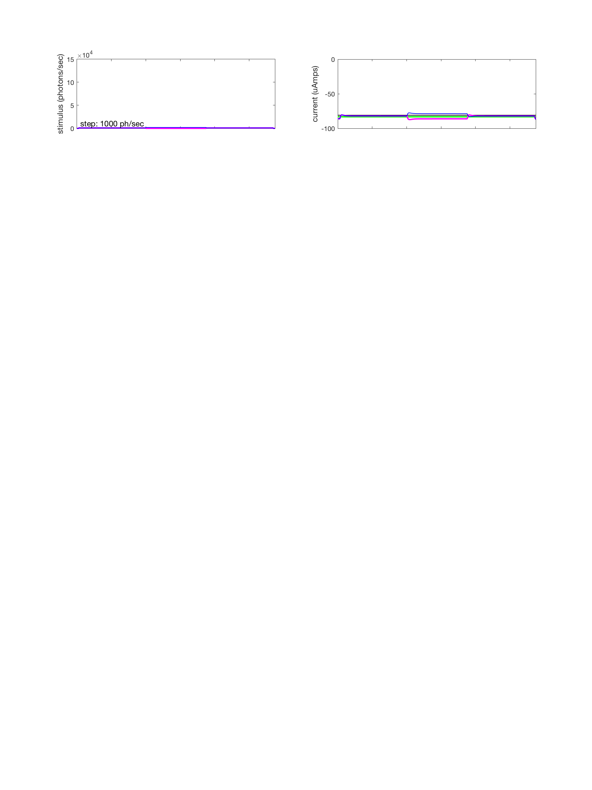
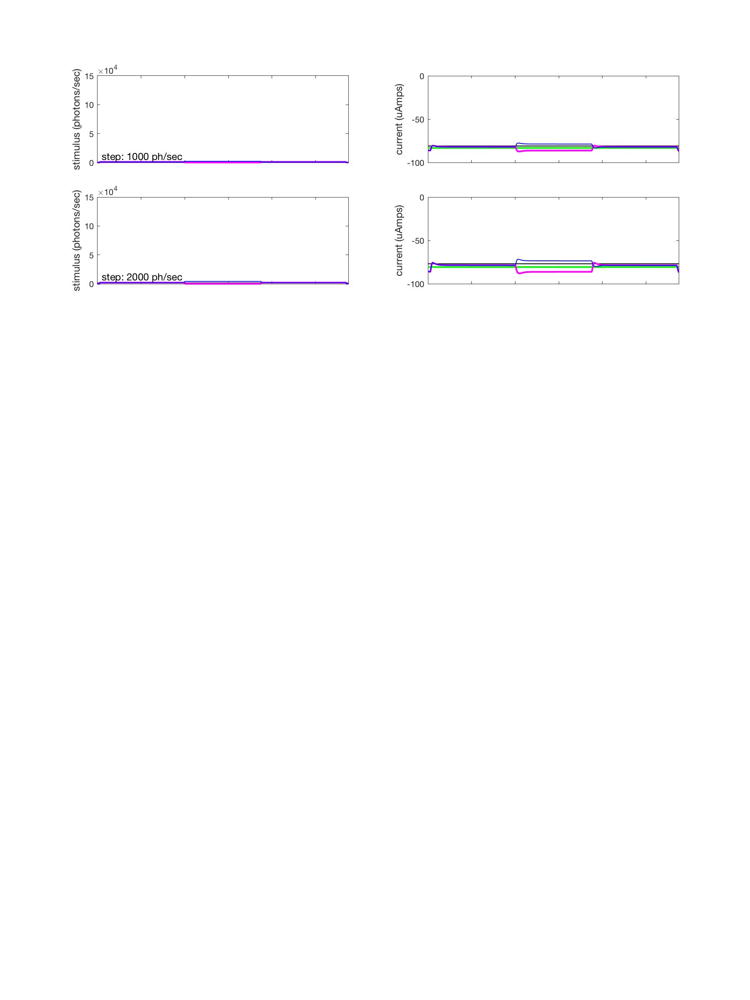
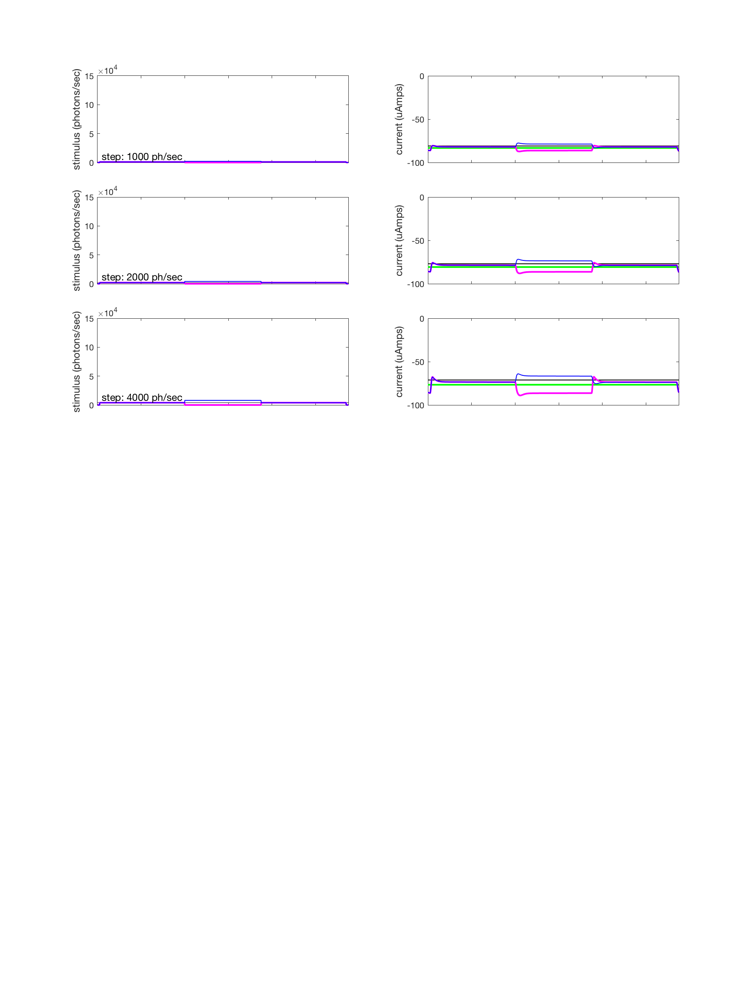
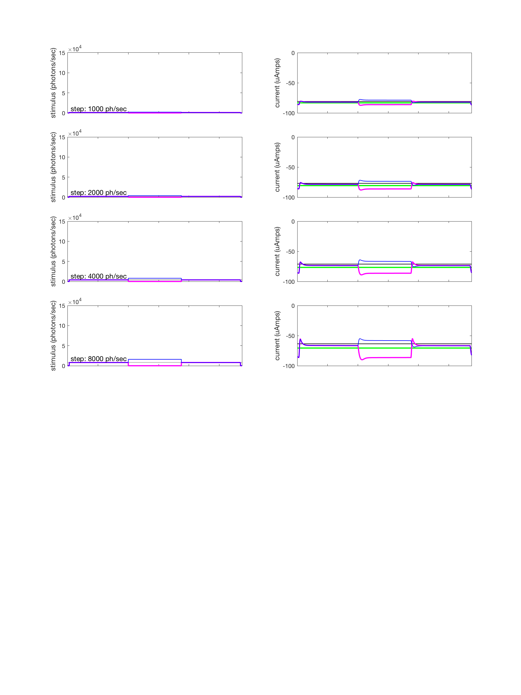
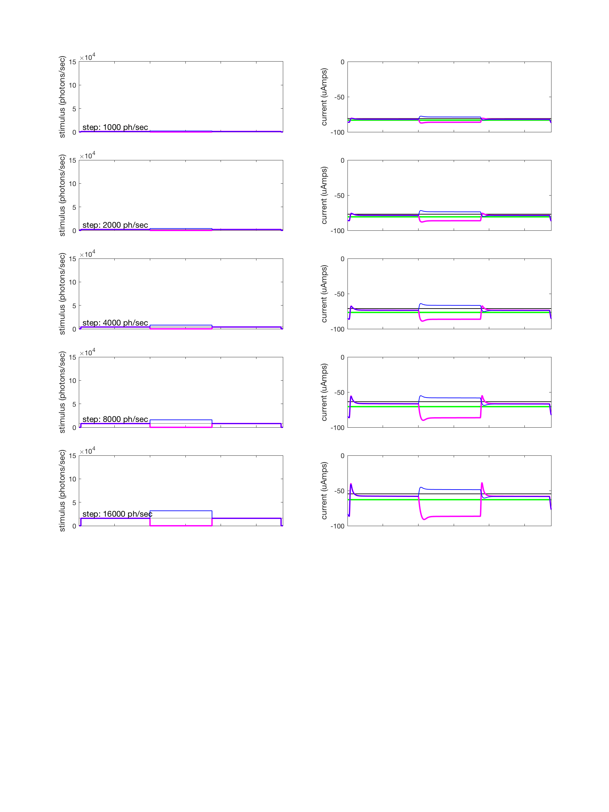
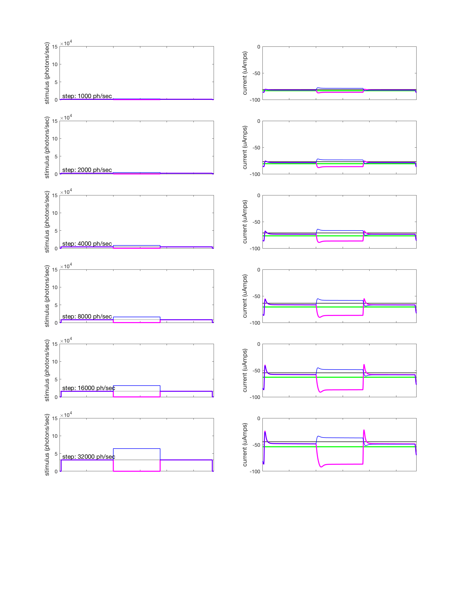
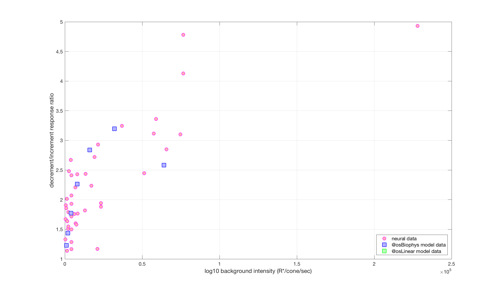

Contents
function varargout = v_osIncDec(varargin) % Validate the os models for light increment and decrement stimuli % % This script tests the linear and biophysical outer segment models of % photon isomerizations to photocurrent transduction that occurs in the % cone outer segments. This is for steps (1.5 sec), both incremental and % decremental with respect to backgrounds of different intensities. % % STATUS as of 2/10/16. We currently have no data to compare against. % % 1/12/16 npc Created after separating the relevant % components from s_coneModelValidate. % 11/17/2016 jrg Converted to cone mosaic, incorporated both linear and % biophysical os models. varargout = UnitTest.runValidationRun(@ValidationFunction, nargout, varargin); end
Function implementing the isetbio validation code
function ValidationFunction(runTimeParams)
Init
ieInit;
Load measured outer segment data
[stimulusPhotonRateAmplitudesNeuralDataPoints, decToIncRatioNeuralDataPoints] = loadMeasuredDecIncRatios();
% Set the simulation time interval. In general, the stimulation time interval should
% be set to a small enough value so as to avoid overflow errors.
simulationTimeIntervalInSeconds = 5e-4;
% Compute the simulation time axis
pulseOnset = 4000;
pulseOffset = 7500;
stimPeriod = [pulseOnset pulseOffset];
nSamples = pulseOffset+4000;
simulationTime = (1:nSamples)*simulationTimeIntervalInSeconds;
stimulusPhotonRateAmplitudes = 500 * 2.^(1:7); % photons/sec
contrastsExamined = [-1 1];
Compute os responses
decrementLinearResponseAmplitude = zeros(1, numel(stimulusPhotonRateAmplitudes));
incrementLinearResponseAmplitude = zeros(1, numel(stimulusPhotonRateAmplitudes));
decrementResponseAmplitude = zeros(1, numel(stimulusPhotonRateAmplitudes));
incrementResponseAmplitude = zeros(1, numel(stimulusPhotonRateAmplitudes));
for stepIndex = 1:numel(stimulusPhotonRateAmplitudes)
% create stimulus temporal profile stimulusPhotonRate = zeros(nSamples, 1); stimulusPhotonRate(100:nSamples-100,1) = stimulusPhotonRateAmplitudes(stepIndex); for contrastIndex = 1:numel(contrastsExamined) % generate step (decrement/increment) stimulusPhotonRateStep(contrastIndex, :) = stimulusPhotonRate; stimulusPhotonRateStep(contrastIndex, pulseOnset:pulseOffset) = stimulusPhotonRate(pulseOnset:pulseOffset,1) * (1+contrastsExamined(contrastIndex)); % Linear model osCML = osLinear(); osCML.set('noise flag','none'); cmL = coneMosaic('os',osCML,'pattern', 2); % a single cone cmL.integrationTime = simulationTimeIntervalInSeconds; cmL.os.timeStep = simulationTimeIntervalInSeconds; cmL.absorptions = simulationTimeIntervalInSeconds*reshape(squeeze(stimulusPhotonRateStep(contrastIndex,:)), [1 1 size(stimulusPhotonRateStep,2)]); % Compute outer segment currents. cmL.computeCurrent(); currentL = (cmL.current); % Biophys model osCM = osBioPhys(); % peripheral (fast) cone dynamics osCM.set('noise flag','none'); cm = coneMosaic('os',osCM,'pattern', 2); % a single cone cm.integrationTime = simulationTimeIntervalInSeconds; cm.os.timeStep = simulationTimeIntervalInSeconds; cm.absorptions = simulationTimeIntervalInSeconds*reshape(squeeze(stimulusPhotonRateStep(contrastIndex,:)), [1 1 size(stimulusPhotonRateStep,2)]); % Compute outer segment currents. cm.computeCurrent(); current = (cm.current); % store copy for saving to validation file if ((stepIndex == 1) && (contrastIndex == 1)) osLinearOuterSegmentCurrent = zeros(numel(stimulusPhotonRateAmplitudes), numel(contrastsExamined), size(current,3)); osBiophysOuterSegmentCurrent = zeros(numel(stimulusPhotonRateAmplitudes), numel(contrastsExamined), size(current,3)); end osLinearOuterSegmentCurrent(stepIndex, contrastIndex,:) = currentL(1,1,:); osBiophysOuterSegmentCurrent(stepIndex, contrastIndex,:) = current(1,1,:); end % contrastIndex
No current noise added. No current noise added.
No current noise added. No current noise added.
No current noise added. No current noise added.
No current noise added. No current noise added.
No current noise added. No current noise added.
No current noise added. No current noise added.
No current noise added. No current noise added.
Capture relevant segments of current responses for inc and dec
Gauge response amplitude at 3 seconds
[~, tBin3seconds] = min(abs(simulationTime-3.0)); % time bin to estimate response to inc/dec pulse [~, tBin5seconds] = min(abs(simulationTime-5.0)); % time bin to estimate response to pedestal % Store appropriate segments of current responses for inc and dec % for biophys model linearDecrResponse = osLinearOuterSegmentCurrent(stepIndex, 1, tBin5seconds); linearIncrResponse = osLinearOuterSegmentCurrent(stepIndex, 2, tBin5seconds); adaptedDecrResponse = osBiophysOuterSegmentCurrent(stepIndex, 1, tBin5seconds); adaptedIncrResponse = osBiophysOuterSegmentCurrent(stepIndex, 2, tBin5seconds); % Store appropriate segments of current responses for inc and dec % for linear model decrementLinearResponseAmplitude(stepIndex) = abs(osLinearOuterSegmentCurrent(stepIndex, 1, tBin3seconds) - linearDecrResponse); incrementLinearResponseAmplitude(stepIndex) = abs(osLinearOuterSegmentCurrent(stepIndex, 2, tBin3seconds) - linearIncrResponse); decrementResponseAmplitude(stepIndex) = abs(osBiophysOuterSegmentCurrent(stepIndex, 1, tBin3seconds) - adaptedDecrResponse); incrementResponseAmplitude(stepIndex) = abs(osBiophysOuterSegmentCurrent(stepIndex, 2, tBin3seconds) - adaptedIncrResponse); fprintf('StepIndex %d: Linear decrement response amplitude: %2.2f, Increment response amplitude: %2.1f\n', stepIndex, decrementLinearResponseAmplitude(stepIndex), incrementLinearResponseAmplitude(stepIndex) ); fprintf('StepIndex %d: Biophys decrement response amplitude: %2.2f, Increment response amplitude: %2.1f\n', stepIndex, decrementResponseAmplitude(stepIndex), incrementResponseAmplitude(stepIndex) );
StepIndex 1: Linear decrement response amplitude: 0.00, Increment response amplitude: 0.0 StepIndex 1: Biophys decrement response amplitude: 4.19, Increment response amplitude: 3.4
StepIndex 2: Linear decrement response amplitude: 0.00, Increment response amplitude: 0.0 StepIndex 2: Biophys decrement response amplitude: 7.56, Increment response amplitude: 5.3
StepIndex 3: Linear decrement response amplitude: 0.00, Increment response amplitude: 0.0 StepIndex 3: Biophys decrement response amplitude: 12.76, Increment response amplitude: 7.2
StepIndex 4: Linear decrement response amplitude: 0.00, Increment response amplitude: 0.0 StepIndex 4: Biophys decrement response amplitude: 19.84, Increment response amplitude: 8.8
StepIndex 5: Linear decrement response amplitude: 0.00, Increment response amplitude: 0.0 StepIndex 5: Biophys decrement response amplitude: 28.47, Increment response amplitude: 10.0
StepIndex 6: Linear decrement response amplitude: 0.00, Increment response amplitude: 0.0 StepIndex 6: Biophys decrement response amplitude: 38.31, Increment response amplitude: 12.0
StepIndex 7: Linear decrement response amplitude: 0.00, Increment response amplitude: 0.0 StepIndex 7: Biophys decrement response amplitude: 50.08, Increment response amplitude: 19.4
Plot
if (runTimeParams.generatePlots) if (stepIndex == 1) h = figure(1); clf; set(h, 'Position', [10 10 900 1200]); end % plot stimulus on the left subplot(numel(stimulusPhotonRateAmplitudes),2,(stepIndex-1)*2+1); plot([simulationTime(1) simulationTime(end)], stimulusPhotonRateAmplitudes(stepIndex)*[1 1], 'k-'); hold on; plot(simulationTime, stimulusPhotonRateStep(1,:), 'm-', 'LineWidth', 2.0); plot(simulationTime, stimulusPhotonRateStep(2,:), 'b-', 'LineWidth', 1.0); set(gca, 'XLim', [simulationTime(1) simulationTime(end)], 'YLim', [0 15e4]); if (stepIndex == numel(stimulusPhotonRateAmplitudes)) xlabel('time (sec)','FontSize',12); else set(gca, 'XTickLabel', {}); end ylabel('stimulus (photons/sec)','FontSize',12); text(0.1, stimulusPhotonRateAmplitudes(stepIndex)+10000, sprintf('step: %d ph/sec',stimulusPhotonRateAmplitudes(stepIndex)), 'FontSize',12); % plot responses on the right subplot(numel(stimulusPhotonRateAmplitudes),2,(stepIndex-1)*2+2); plot(simulationTime, squeeze(osLinearOuterSegmentCurrent(stepIndex, 1, :)), 'g-', 'LineWidth', 2.0); hold on; plot(simulationTime, squeeze(osLinearOuterSegmentCurrent(stepIndex, 2, :)), 'k-', 'LineWidth', 1.0); plot(simulationTime, squeeze(osBiophysOuterSegmentCurrent(stepIndex, 1, :)), 'm-', 'LineWidth', 2.0); hold on; plot(simulationTime, squeeze(osBiophysOuterSegmentCurrent(stepIndex, 2, :)), 'b-', 'LineWidth', 1.0); set(gca, 'XLim', [simulationTime(1) simulationTime(end)], 'YLim', [-100 0]); if (stepIndex == numel(stimulusPhotonRateAmplitudes)) xlabel('time (sec)','FontSize',12); else set(gca, 'XTickLabel', {}); end ylabel('current (uAmps)','FontSize',12); drawnow; end % if (runTimeParams.generatePlots)     

end % stepIndex showFit = false; decToIncRatioNeural = zeros(1, numel(stimulusPhotonRateAmplitudes)); decToIncRatioModel = zeros(1, numel(stimulusPhotonRateAmplitudes)); decToIncRatioLinearModel = zeros(1, numel(stimulusPhotonRateAmplitudes)); for stepIndex = 1:numel(stimulusPhotonRateAmplitudes) [decToIncRatioNeural(stepIndex), stimulusPhotonRateAxisFit, decToIncRatioNeuralFit] = generateDecIncRatioEstimate(stimulusPhotonRateAmplitudes(stepIndex), showFit, stimulusPhotonRateAmplitudesNeuralDataPoints, decToIncRatioNeuralDataPoints); decToIncRatioModel(stepIndex) = decrementResponseAmplitude(stepIndex) / incrementResponseAmplitude(stepIndex); decToIncRatioLinearModel(stepIndex) = decrementLinearResponseAmplitude(stepIndex) / incrementLinearResponseAmplitude(stepIndex); end h = figure(2); clf; set(h, 'Position', [10 10 1200 700]); hold on; plot(stimulusPhotonRateAmplitudesNeuralDataPoints, decToIncRatioNeuralDataPoints, 'mo', 'MarkerFaceColor', [1 0.7 0.7], 'MarkerSize', 8); %plot(stimulusPhotonRateAxisFit, decToIncRatioNeuralFit, 'r-', 'LineWidth', 2.0); plot(stimulusPhotonRateAmplitudes, decToIncRatioModel, 'bs', 'MarkerSize', 12, 'MarkerFaceColor', [0.7 0.7 1.0]); plot(stimulusPhotonRateAmplitudes, decToIncRatioLinearModel, 'gs', 'MarkerSize', 12, 'MarkerFaceColor', [0.7 1 0.7]); set(gca, 'FontSize', 12); xlabel('log10 background intensity (R*/cone/sec)', 'FontSize', 14); ylabel('decrement/increment response ratio', 'FontSize', 14); %hLegend = legend('neural data', 'fit to neural data (logistic)', '@osBiophys model data'); hLegend = legend('neural data', '@osBiophys model data','@osLinear model data'); set(hLegend, 'Location', 'SouthEast', 'FontSize', 12); box on; grid on; hold off; drawnow;
Save validation data
UnitTest.validationData('osLinearCurrent', osLinearOuterSegmentCurrent); UnitTest.validationData('osBiophysCurrent', osBiophysOuterSegmentCurrent); UnitTest.validationData('simulationTime', simulationTime); UnitTest.validationData('stimPeriod', stimPeriod); UnitTest.validationData('stimulusPhotonRateAmplitudes',stimulusPhotonRateAmplitudes);
end
Helper functions
function [intensities, decIncRatios] = loadMeasuredDecIncRatios() dataSource = {'resources/data/cones', 'decIncRatios.mat'}; fprintf('Fetching remote data: dir=''%s'' file=''%s''. Please wait ...\n', dataSource{1}, dataSource{2}); % Download neural data from isetbio's repository client = RdtClient('isetbio'); client.crp(dataSource{1}); [data, decIncRatiosArtifact] = client.readArtifact(dataSource{2}, 'type', 'mat'); fprintf('Done fetching data.\n'); intensities = data.intensities; decIncRatios = data.decIncRatios; end function [predictedDecToIncRatio, stimulusPhotonRateAxis, predictedDecToIncFunction] = generateDecIncRatioEstimate(backgroundIntensity, showFit, Intensities, DecIncRatio) logIntensDataPts = log10(Intensities); decIncRatioDataPts = DecIncRatio; if (showFit) figure(100); clf; plot(10.^logIntensDataPts, decIncRatioDataPts, 'ks'); end % Initial params for logistic function gain = 4; minDecIncRatio = 1.7; kappa = 4; % steepness logIntensity50 = 4.5; % midpoint initialParams = [minDecIncRatio; gain; kappa; logIntensity50]; % Fit logistic function to recorded data fittedParams = nlinfit(logIntensDataPts, decIncRatioDataPts, @logisticFunction, initialParams); if (showFit) logIntensityAxis = linspace(min(logIntensDataPts), max(logIntensDataPts), 100); decIncRatioFunction = logisticFunction(fittedParams, logIntensityAxis); hold on; plot(10.^logIntensityAxis, decIncRatioFunction, 'r-', 'LineWidth', 2.0); hold off; legend('data', 'fitted function'); drawnow; end if ( (log10(backgroundIntensity) >= min(logIntensDataPts)) && ... (log10(backgroundIntensity) <= max(logIntensDataPts)) ) predictedDecToIncRatio = logisticFunction(fittedParams, log10(backgroundIntensity)); else predictedDecToIncRatio = nan; end stimulusPhotonRateAxis = 10.^(linspace(min(logIntensDataPts), max(logIntensDataPts), 100)); predictedDecToIncFunction = logisticFunction(fittedParams, log10(stimulusPhotonRateAxis)); end function y = logisticFunction(params, x) yo = params(1); gain = params(2); kappa = params(3); x50 = params(4); y = yo + gain * (1 ./ (1 + exp(-kappa*(x-x50)))); end
Fetching remote data: dir='resources/data/cones' file='decIncRatios.mat'. Please wait ... Done fetching data.